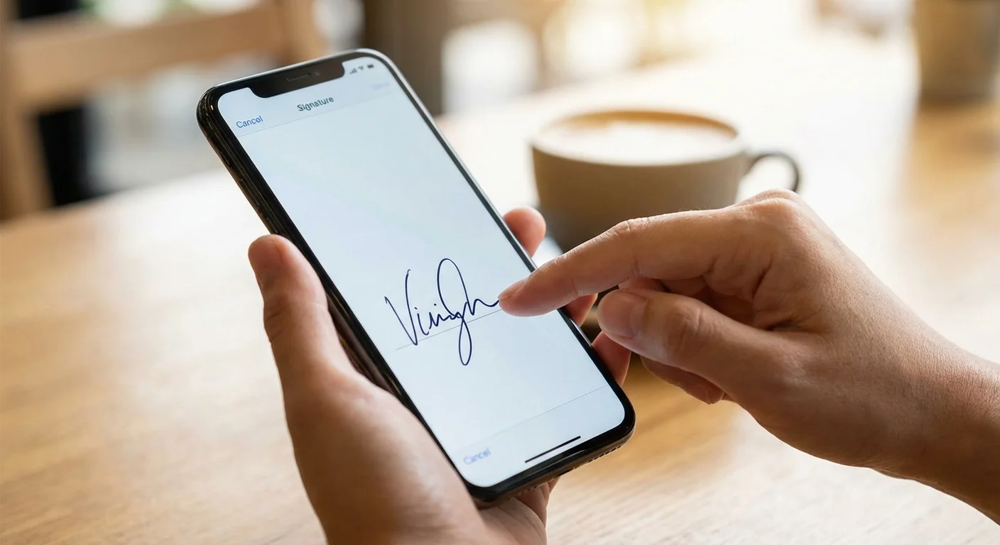

You are sitting in a café, on a train, or just on your couch — and someone emails you a document that needs your signature right now. You do not have a laptop, a printer, or a scanner. All you have is your phone. Good news: that is all you need.
Your phone's touchscreen is actually one of the best signature tools available. Your finger captures the natural pressure and speed of your handwriting in a way that a mouse never can. In this guide, we will show you how to create a professional digital signature on your iPhone or Android in under 30 seconds.

Why Your Phone Is Actually the Best Signature Tool
Most people assume they need a computer to create a digital signature. But your phone has two advantages that a laptop does not:
- Touchscreen input: Drawing with your finger on glass is far more natural than dragging a mouse on a desk. The result looks like a real pen signature.
- Always with you: You can sign a document the moment you receive it — no need to wait until you get home or find a computer.
- Pressure sensitivity: Modern phone screens detect varying pressure, creating natural thick-and-thin strokes that look authentic.
The key is using the right tool. Most built-in phone features (like Markup on iPhone) work in a pinch, but a dedicated browser-based generator gives you a transparent PNG that works everywhere.
Method 1: Browser-Based Generator (Recommended)
This is the fastest and most versatile method. It works on any phone with a browser — iPhone, Android, even tablets.
Step 1: Open Signature Sketch
Open Safari (iPhone) or Chrome (Android) and go to signaturesketch.tech. The tool loads instantly — no app to download, no account to create.
Step 2: Turn Your Phone Sideways
Rotate your phone to landscape mode. This gives you a wider canvas that matches the proportions of a signature line on a document. The canvas will automatically resize.
Step 3: Sign With Your Finger
Sign your name on the canvas using your finger. Here is the most important tip: sign quickly. A fast, confident stroke looks natural. A slow, careful drawing looks fake. Pretend you are signing a receipt at a restaurant.
Pro tip: Use your thumb or index finger
- Index finger: Best for precise, smaller signatures. Hold the phone with your other hand.
- Thumb: Works well if you are signing one-handed. Produces a slightly bolder stroke.
- Stylus: If you have an Apple Pencil or any capacitive stylus, the result will be even more realistic — but it is not necessary.
Step 4: Choose Your Color
Select black for standard documents or blue for contracts and legal papers. Blue ink signals originality and is preferred by banks and legal institutions.
Step 5: Download the PNG
Tap "Download PNG". The signature saves to your phone's photo library or downloads folder as a transparent PNG. You can now use this image on any document, on any device, forever.
Method 2: iPhone Built-in Markup
If you need to sign a PDF that is already on your iPhone, you can use the built-in Markup tool without any third-party app:
- Open the PDF in the Files app or Mail attachment.
- Tap the Markup icon (pen tip in a circle).
- Tap the "+" button → Add Signature.
- Sign with your finger on the popup canvas.
- Drag and resize the signature onto the signature line.
- Tap Done to save.
Limitation: The Markup signature is stored locally and only works within Apple's ecosystem. It cannot be exported as a transparent PNG for use in Word, Google Docs, or other platforms. For cross-platform use, Method 1 is better.
Method 3: Android Built-in Options
Android does not have a universal built-in signature tool like iPhone's Markup, but you have several options:
- Google Drive: Open a PDF in Google Drive → tap the edit/annotate icon → use the pen tool to draw your signature.
- Adobe Acrobat Reader (Free): Open any PDF → tap "Fill & Sign" → draw or add an image signature.
- Samsung Notes (Samsung phones): Draw your signature, export as image, then insert into documents.
Again, for the most professional result with a transparent background, the browser-based method (Method 1) works identically on Android and produces a reusable PNG file.
Phone Signature Methods Compared
| Method | Works On | Transparent BG | Reusable |
|---|---|---|---|
| Signature Sketch (Browser) | iPhone, Android, Any | ✓ Yes | ✓ Yes |
| iPhone Markup | iPhone / iPad only | ✗ No (white bg) | Limited (Apple only) |
| Adobe Acrobat Reader | iPhone, Android | ✗ No | Within app only |
| Google Drive Annotate | Android (limited iOS) | ✗ No | ✗ No |
Tips for a Better Phone Signature
- Clean your screen: Fingerprints and smudges can cause your finger to skip. A quick wipe makes a big difference.
- Sign fast: Speed equals confidence. A slow signature looks hesitant and shaky. A quick one looks natural.
- Use landscape mode: A wider canvas gives your signature room to breathe and matches document proportions.
- Try 2-3 times: Your first attempt might feel awkward. By the third try, you will have a signature you are happy with.
- Save it permanently: Once you have a good signature PNG, save it to your cloud storage (iCloud, Google Drive, Dropbox). You will never need to create it again.
Where Can You Use Your Phone Signature?
Once you have your transparent PNG signature saved, you can use it on virtually any document:
- PDFs: Insert via Adobe Reader, Preview, or any PDF editor. See our PDF signing guide.
- Microsoft Word: Insert → Picture → select your signature PNG. Full Word guide here.
- Google Docs: Insert → Image → Upload from phone. Full Google Docs guide here.
- Emails: Attach the image or paste it inline as part of your email signature.
- Online forms: Many web portals accept image uploads for signature fields.
Is a Phone Signature Legally Valid?
Yes. The device you use to create a signature does not affect its legal validity. Under the US ESIGN Act, EU eIDAS regulation, and equivalent laws in most countries, an electronic signature is legally binding regardless of whether it was created on a phone, tablet, or computer.
What matters legally is intent to sign and consent, not the hardware. A signature drawn with your finger on a phone screen carries the same legal weight as one drawn with a mouse on a desktop.
Frequently Asked Questions
Do I need a stylus for a good signature?
No. Your finger works perfectly well. A stylus (like Apple Pencil) can add more detail, but for a standard signature, your finger produces a natural, authentic result. The key is signing quickly rather than slowly tracing each letter.
Can I use the same signature on my computer later?
Yes. If you create a transparent PNG using the browser method, you can AirDrop it to your Mac, email it to yourself, or save it to cloud storage. The same PNG file works on any device and any application.
What if my signature looks too messy?
Real signatures are messy. That is actually what makes them look authentic. If your signature is too neat and perfect, it looks like a font — not a real person's handwriting. Embrace the imperfections.
Is it safe to create my signature online?
With Signature Sketch, yes. The signature is drawn and processed entirely in your browser. Nothing is uploaded to any server. Your signature data never leaves your device.
Try It on Your Phone Now
Open this link on your phone, draw your signature with your finger, and download the transparent PNG in seconds.
Open Signature Generator